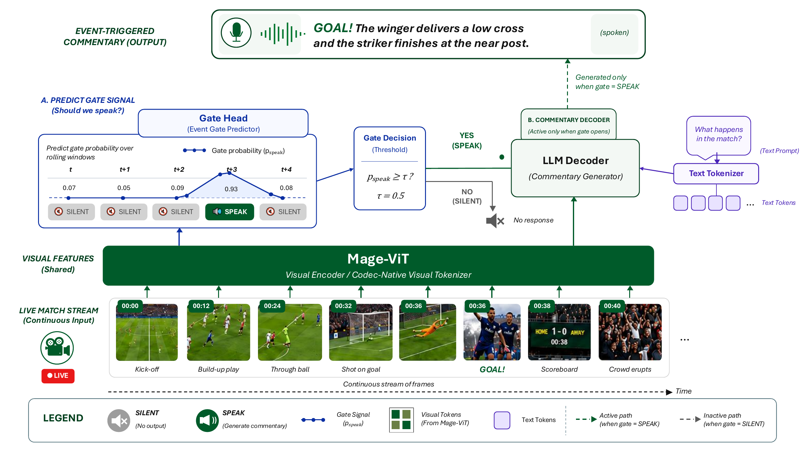
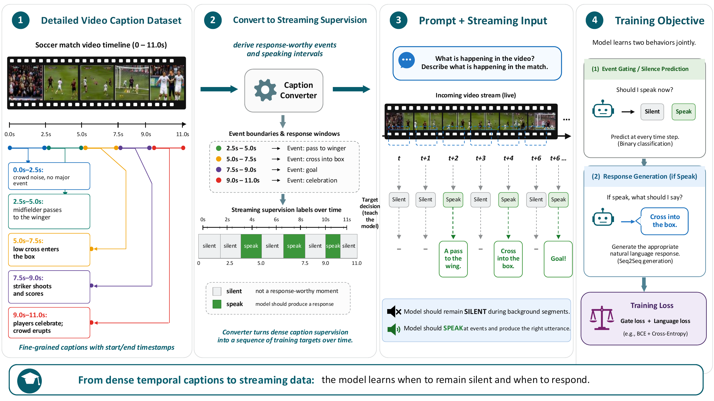

Mage-VL
A Codec-Native Proactive Streaming
Multimodal Foundation Model
Microsoft Mage Team
{kind=link}
Mage-VL: codec-native visual representations for efficient multimodal understanding — benchmark performance against Qwen3-VL-4B, Phi-4-reasoning-vision-15B and Phi-4-MM-5.6B, and the streaming pipeline from live input to codec-native token selection and online multimodal understanding. Click to expand.
Mage-VL and Qwen3-VL-4B share the same 4B Qwen3 LLM backbone, so the visual tokenizer is the only architectural difference. Numbers from the Mage-VL technical report.
Abstract
Current mainstream Vision-Language Models heavily rely on computationally expensive offline frame sampling and static vision encoders pre-trained on billions of image–text pairs. We present Mage-VL, a codec-native, proactive-streaming multimodal foundation model trained entirely from scratch. Built on the OneVision Encoder architecture, Mage-VL abandons uniform frame sampling in favor of a bio-inspired predictive patch mechanism that separates video streams into anchor (I) and predicted (P) frames using 16×16 patch-level compression. To support low-latency interaction, a streamlined System 1 & System 2 dual-process network enables proactive streaming responses within a single-model agent — no multi-agent pipeline. Our training journey yields critical data-efficiency insights: a custom vision encoder trained on merely ~100M unlabeled video frames achieves comparable or superior performance to frontier encoders trained on billions of static images. The compact Mage-VL-4B performs on par with Qwen3-VL-4B on static-image benchmarks, substantially outperforms it on video understanding and spatial reasoning, and comprehensively surpasses the larger Phi-4-V-R (15B) across image, video, and spatial benchmarks. We release model checkpoints and training recipes to the community.
Instead of offline uniform frame sampling with a frozen encoder, Mage-VL reads video the way a codec does. Video is split into anchor (I) frames (processed fully) and predicted (P) frames (only motion-affected patches kept) at a 16×16 patch level. A single per-patch importance interface accepts signals from traditional codecs (H.264/HEVC block bits) and neural codecs (DCVC-RT rate map) with no change to architecture, objective, or LLM.
{kind=link}

Mage-VL architecture: codec front-end (Mage-ViT) → variable-length token stream → Qwen3 LLM.
A from-scratch Mage-ViT trained on merely ~100M unlabeled video frames matches or surpasses SigLip2 (10B image–text pairs) and Qwen-ViT (2B) — using 1/100–1/20 of the data. We further show that expanding image-captioning data and exploiting temporal video tokens can substitute massive static images for stronger spatial understanding, emphasizing that data efficiency and architectural alignment can outweigh sheer dataset scale.
A single-model System 1 & System 2 dual-process network gives low-latency, proactive responses to continuous video streams. Early layers act as System 1 (fast filter — is a response needed now?) and route to deeper System 2 layers only for complex decisions — no multi-agent pipeline. Temporal annotations are repurposed into sequential interaction boundaries, and the model generalizes to real-world streams (e.g. 2026 World Cup match videos).
{kind=link}

Streaming data construction: temporal annotations → sequential interaction boundaries for proactive responses.
Proactive Streaming in the Wild
Mage-VL watches continuously, stays quiet when nothing needs saying, and speaks when the event gate detects a response-worthy moment. Choose a demo and play the video to see each response appear at the moment it is triggered.
Raw model outputs from Mage-VL/Mage-VL-Base,
--video_backend codec, --segment_sec 30,
followed by standard Transformers generate() on the current segment.
Performance 📊
Mage-VL and Qwen3-VL-4B share the same 4B Qwen3 LLM backbone, so the visual tokenizer (dense ViT → Mage-ViT) is the only architectural difference — isolating the effect of codec-aligned sparsity. Higher is better; column best in bold.
Video Understanding & Temporal Grounding
| Benchmark | Qwen3-VL-4B | Mage-VL-4B | Δ |
|---|---|---|---|
| VideoMME | 59.7 | 64.0 | +4.3 |
| Timelens-ActivityNet | 28.4 | 45.4 | +17.1 |
| Timelens-QVHighlight | 34.9 | 57.4 | +22.5 |
Spatial Intelligence
| Benchmark | Qwen3-VL-4B | Mage-VL-4B |
|---|---|---|
| CV-Bench-2D | 81.00 | 82.13 |
| CV-Bench-3D | 92.30 | 94.75 |
| EmbSpatial | 77.50 | 82.67 |
| CrossPoint (cross-view) | 26.90 | 80.00 |
Image Understanding
On par with Qwen3-VL-4B on aggregate; ahead on MathVision / MMBench, behind on MMMU / MathVista.
| Benchmark | Qwen3-VL-4B | Mage-VL-4B |
|---|---|---|
| MathVision | 21.05 | 23.65 |
| MMBench-EN-dev | 83.25 | 84.02 |
| MMBench-CN-dev | 80.58 | 82.04 |
| MathVista-mini | 73.50 | 67.20 |
| MMMU | 67.81 | 54.67 |
Numbers from the Mage-VL technical report. Mage-VL also surpasses the larger Phi-4-V-R (15B) on most of these benchmarks.
BibTeX 📚
@techreport{magevl2026,
title = {Mage-VL: A Codec-Native Proactive Streaming
Multimodal Foundation Model},
author = {Microsoft Mage Team},
year = {2026},
institution = {Microsoft},
url = {https://github.com/microsoft/Mage}
}